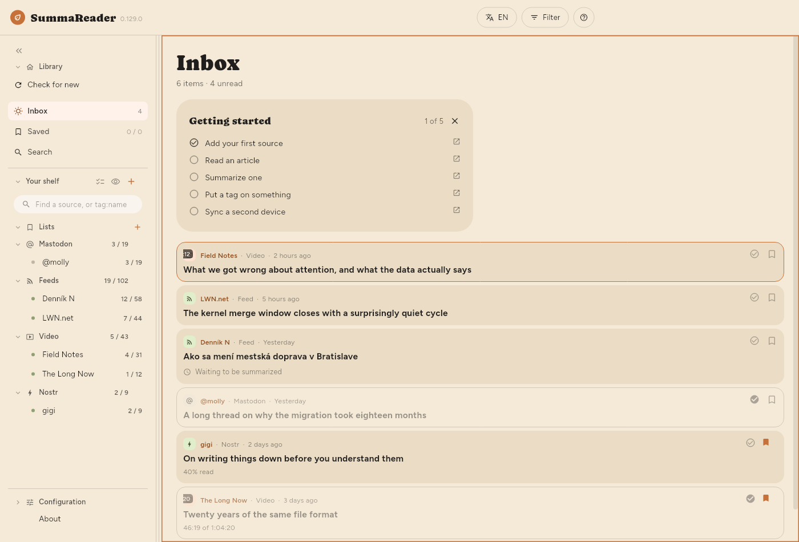
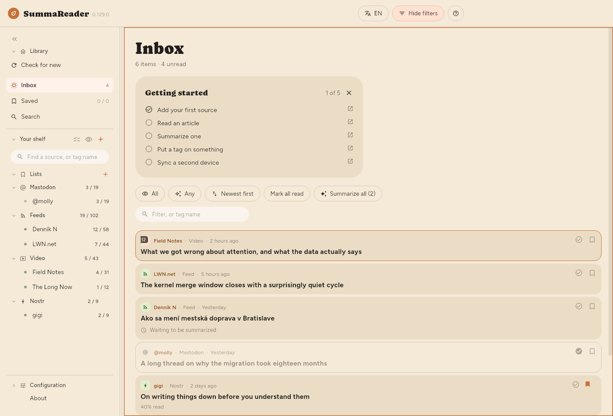

← Getting started · Contents · Reading →
The window

The top bar
| Control | What it does |
|---|---|
| EN | The interface language |
| Filter | Shows and hides the filter panel |
| ? | Help for what is on screen |
Filter appears while the list is on screen — which includes reading an article beside it. The Filter button fills in and reads Filtered whenever something is narrowing the list, so a list showing a fraction of itself always says why. On a phone, ☰ opens the shelf, and Filter is the button beside ?.
The shelf
Down the left: Library with Check for new, Inbox, Saved and Search, then Your shelf with your Lists and your feeds grouped by kind, then Configuration at the foot. Each feed shows unread / total; each list shows what it holds. On a phone the shelf is a drawer, opened with ☰.
- Check for new fetches every source now.
- The box at the top narrows the shelf and nothing else: part of a feed's name, or
tag:and part of a tag. Part is enough, sotag:gamfindsgamingandretro-gamingalike — and a short word casts wide, sincetag:aialso finds a feed taggedretail, and!tag:aihides it. The text box in the filter panel wants the whole tag. - Click a feed to see only that feed.
- Click a list to see what is on it — see Keeping things.
- Select several (the ticks beside Your shelf), or a long press on a row, shows a gear on every feed. The gear opens that feed's own panel — see Managing sources.
- The eye beside + hides every feed with nothing waiting in it.
- « collapses the shelf to a strip of icons.
bdoes the same.
The filter panel
Press Filter. Everything that decides what the list shows is here, and it is closed by default so the first thing under the heading is the first article.


| Control | What it does |
|---|---|
| Unread / Read / All | Which items to show |
| Any / Summarized / Not summarized | Whether a summary exists |
| Newest first | Sorting — press to cycle through six |
| Mark all read | Marks everything the filter covers |
| Summarize all | Summarizes everything the filter covers |
| Kind chips | Videos, feeds, posts — click to narrow |
| The text box | Matches a word in the title, source or summary, or tag:name |
Sorting cycles: Newest first → Oldest first → Title A–Z → Title Z–A → Feed A–Z → Feed Z–A, and back.
The read filter, the summarized filter and the sort are remembered between launches. Picking a feed is not — that is navigation, and opening into a library narrowed to one feed you chose last week reads as an empty app.
The counts under "Inbox"
Showing 18 of 5,878 · 52 unread · 812 to summarize
- Showing appears only when a filter is narrowing things, and counts the rows actually on screen.
- to summarize is the same number as the Summarize button, and is what pressing it would do.
How the list looks
| Setting | Where |
|---|---|
| Text size | Configuration › Basic › Appearance › Text › Text size |
| List density | Configuration › Basic › Appearance › List › List density |
| Summary in list | Configuration › Basic › Appearance › List › Summary in list |
| Show the Getting started checklist | Configuration › Basic › Appearance › List › Show the Getting started checklist |
| Thumbnails | Configuration › Basic › Appearance › List › Thumbnails |
| Line spacing, Column width | Configuration › Basic › Appearance › Article |
| Where the article sits | Configuration › Basic › Appearance › Layout |
| Group by source | Configuration › Basic › Appearance › List › Group by source |
List density decides how much of each item the list draws:
| Summary | Title | Picture | |
|---|---|---|---|
| Comfortable | shown | wraps freely | large |
| Compact (default) | — | two lines | small |
| Dense | — | one line | none |
With Comfortable chosen, Summary in list (Configuration › Basic › Appearance › List › Summary in list) sets how much of each summary a row shows: 2 lines, 4 lines or the Whole summary (the default). An article with no summary yet shows its opening in the same place, dimmer, with the same limit: the feed's own description, or else the first words of the article's text. The row is only there while Comfortable is chosen, because Compact and Dense show no summary.
Thumbnails: Picture shows each article's own image instead of a kind icon. It is the only one of the three that costs anything: pictures are downloaded a few at a time for the rows on screen, so a long backlog fills in gradually rather than all at once. Dense ignores the setting — a picture is three lines tall, which is not dense.